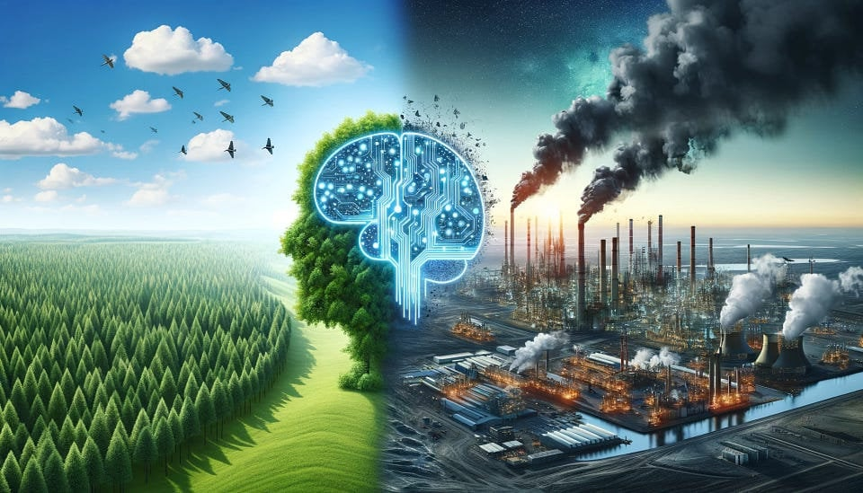

Environmental Impact of Generative AI
The amount of energy generative AI (gen AI) requires has increased in recent years. The latest developments in gen AI, specifically Large Language Models (LLMs) have meant that the technology gen AI relies on has adapted and improved, consuming more energy. LLMs are held in large data centres, which use up excessive quantities of natural resources, such as water, and run on large amounts of energy. Data centres hold the models gen AI is trained on. These models are constantly increasing in size and complexity. Gen AI is now reaching significant numbers of people, meaning overall energy consumption and resultant environmental impact has risen and is continuing to rise at an alarming rate.
LLMs go through many stages and processes; two being the training process and, later, the inference process. Both use large, extreme amounts of energy. The training stage is usually seen as the stage that uses the most energy out of every process. This stage consists of training AI models by giving them vast datasets. When the model is in the first section of training, the output it gives is random. There is a target output, and the parameters are toggled until the model can generate something very similar to the target output. The model learns patters and relationship and stores this information. Once the model has been trained, the inference stage takes place. The model uses what it has learned in training on new, unseen data. It compares this data against the patterns it has learned. The training stage takes longer than the inference stage and uses more powerful computers but is only carried out once. The inference stage uses less energy at once but is carried out during each gen AI request (Rincé, Banse, 2025; Zhang et al., 2024).
Data centres that hold AI servers create electronic waste and can contain dangerous compounds and metals, like mercury and lead. This has a negative impact on the environment. Data centres use up lots of electricity and energy, much of which is powered by fossil fuels. Fossil fuels contribute to greenhouse gas emissions. To build data centres and cool donw the electrical components inside them, lots of water is needed. By 2027, between 4.2 and 6.6 million m3 of water will have been used on AI worldwide (United Nations, 2025). A big data centre could be made up of more than 10,000 connected chips. In these chips are about twelve Graphics Processing Units (GPUs) that hold one AI model. Wired beside these chips are fans to lower the heat of the components and Central Processing Units (CPUs) which give information to the GPUs. Energy is wasted in between all these processes because of poor insulation, long cables, and clean water being used to cool down parts (O’Donnell, 2025).
The rapid rate at which AI is evolving puts the environment at risk due to the amount of electricity and energy that data centres run on. In the past few years, the amount of electricity that data centres consume has taken up 1% of the entire world’s electricity consumption. This percentage has stayed roughly around this number up until the 2010s. when the electricity usage by data centres went up by 6%. Because AI is continually being refined and upgraded, there is constant worry that the technical assets being used to further AI models might mean that the energy data centres contribute to worldwide electricity consumption surges. Data centres already contribute to the world’s energy usage, but they are only going to expand and increase in number from this day, so data centres’ energy consumption will inevitably increase now and in the future.
In the past few years, AI’s capabilities have significantly improved in response to the rapidly increasing usage of AI throughout the world. Evidently, this means that the energy consumption of AI will have risen with these improvements and increased usage. ChatGPT, created by Open AI, is a gen AI chatbot that is able to hold humanlike conversations. ChatGPT was released two years ago and a significant portion of the world accessed this program in an unexpectedly short time. To counter the release of ChatGPT, leading technology corporations Alphabet and Microsoft launched chatbots of their own: Bing Chat and Bard, meaning the support for AI was strengthened massively in the year 2023 (de Vries, 2023).
An expert stated that the energy consumed by ChatGPT is currently equivalent to the electricity usage of more than 30,000 average households. As the popularity and usage of gen AI such as ChatGPT continue to expand rapidly, researchers are warning that their energy demands could soon rival the total energy consumption of entire countries (Crawford, 2024). The International Energy Agency says that generating one ChatGPT request versus performing a traditional web search using a search engine such as Google uses ten times more energy (Çam, 2024). This is because gen AI doesn’t just look up existing data, it generates new information: text, images, audio, etc.

To conclude, the environmental impact of generative AI has been made worse by the amount of energy used to perform requests. LLMs have been developed and take gen AI models through many energy-intensive stages to perform a request. Data centres store these LLMs and use up many supplies, such as water and energy. Gen AI is developing every day and being accessed by millions of users worldwide. Gen AI’s overall energy consumption has surged – contributing to a growing negative environmental impact.